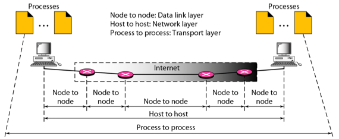
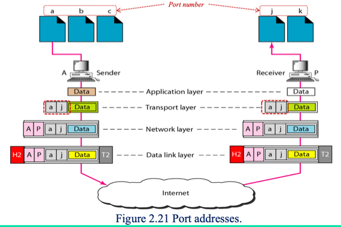
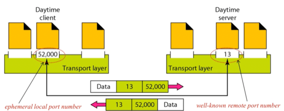
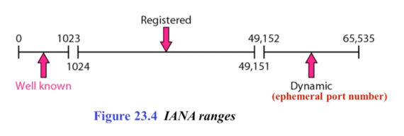
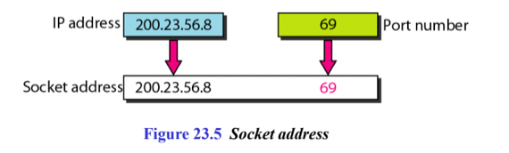
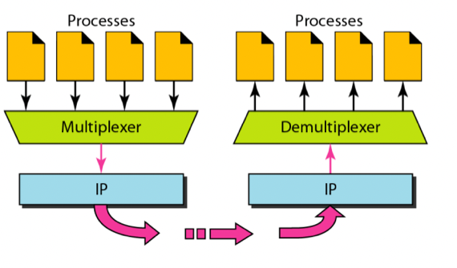
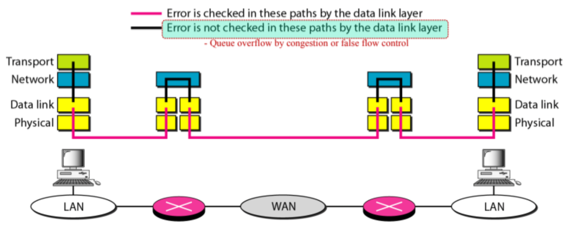
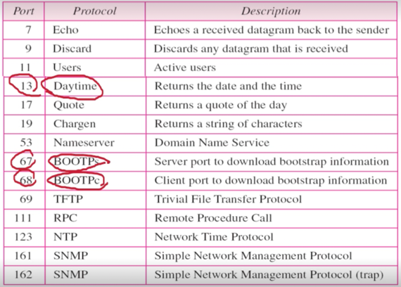
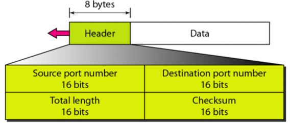
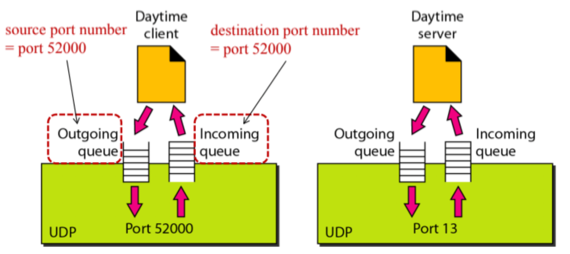

충남대학교 컴퓨터공학과 김상하 교수님의 "컴퓨터 네트워크" 강의를 필기한 내용입니다.
다소 잘못된 내용과 구어적 표현 이 포함되어 있을 수 있습니다.
Transport Layer

- 위 그림에서처럼
- 호스트한테 도착한 이후, 호스트 내의 특정 프로세스로 데이터를 전달하기 위한 계층이 Transport layer이다

- 이것을 위해선 Port address가 있어 특정 port address로 데이터를 전송해 올바른 프로세스로 찾아가게 한다
- 즉, Process-to-Process Delivery를 위한 계층이 Transport layer인 셈
- 종류로는 UDP, TCP, SCTP가 있고 이중에 TCP가 제일 유명하지만 UDP나 SCTP를 사용할 수도 있댄다
Process-to-Process Delivery
- 일단 용어정리를 좀 하면
- IP주소가 A인 Host의 port a가 IP주소가 P인 Host의 port j로 보내면
- Local host는 A이고 Remote host는 P이다 - Local host와 Remote host에서 host는 IP를 뜻하는 말임
- Local process는 a이고 Remote process는 j이다 - Local process와 Remote process에서 process는 port를 뜻하는 거더라
Client-server model
- 데이터를 받는 상대방의 port는 어떻게 알아내냐는 궁금증에 생기게 되는데
- 상대방의 port를 알아내는 방법으로 Client-server model을 사용하게 된다
- 일단 Client는 통신을 시작하는 쪽, 먼저 요청하는 놈 - Initiator이라고 생각하면 된다
- 일반적으로는 서비스를 요청하는놈이라고 생각해도 되지만 특별한 경우에는 서비스를 제공해주는 놈이 통신을 시작하기도 하더라
- 그리고 Server는 Client의 통신 / 요청에 대해 응답하는놈 - Responser이 된다
- 이때 Client-server model에서는 Server의 port를 이미 잘 알려진 값인 well-known port를 사용한다
- 뭐 알다시피 http의 경우에는 80을 사용하쥬
- 즉, Server가 well known port를 사용하기 때문에 통신을 시작하는 쪽인 Client는 Server의 port번호를 알 수 밖에 없다
- 따라서 Client가 well known port로 보내게 되면 Server는 그것을 받고 Client의 port번호를 알아낼 수 있기 때문에 정상적인 응답을 보내줄 수 있는 것

- 위에가 예신데
- 보다시피 Daytime 이라는 프로토콜에서는 Server가 13이라는 Well-known port를 이용하고
- 클라이언트는 이걸 알기 때문에 자신의 임시 port인 52000을 실어 보내면 Server가 알게 되는 것
- 클라이언트의 port는 임시적인거고 프로세스가 죽으면 다른 프로세스에게로 할당될 수 있다 - Ephemeral local port number라고 하더라
- 그리고 MAC, IP주소와 마찬가지로 port번호도 다른 계층에서 알 수 없는 것은 아니다 - port번호가 패킷에 담기는 자료구조를 모르는 것
- 일례로 IP주소가 Transport계층을 넘어 Application까지 넘어가는 경우가 있고 port라는 것도 Transport의 상위계층에서 넘겨주는 값이다
Address System
Port Number

- IANA라는 기관에서 port번호를 정하는 규칙을 만들어놨댄다
- 보면 0~1024까지는 well-known
- 1024~49151까지는 Registered라고 해서 나중에 쓸 목적으로 비워둔 곳
- 49152~65535는 프로세스가 임시로 할당받게 되는 값이다
Socket Address

- IP와 Port를 합친 주소를 Socket Address라고 한다
- 얘는 Application Layer에서 사용하는 주소 중 하나로 다른 계층의 주소를 사용할 수 있다는 것을 보여주는 또 다른 사례인 것
Multiplexer, Demultiplexer

- Process들에게서 전달받은 데이터를 취합하여 IP로 보내는 Multiplexer와
- 받은 데이터를 다시 나눠 각각의 Process들에게 뿌려주는 Demultiplexer가 있댄다
Connection, Reliable
Connectionless vs Connection-oriented
- 일단 앞에서 배운것처럼 Connection이라는 것은 데이터가 보내진 순서대로 도착하느냐 아니냐에 따라 나눠진다
- Connectionless는 순서가 바뀌든 중간에 유실되든 상관 없이 전송되는 것을 의미 - UDP가 여기에 해당한다
- 그리고 Connection-Oriented는 순서가 바뀌면 안되고 보낸 순서대로 도착해야되는 것 - TCP과 SCTP가 여기에 해당한다
- Connection-Oriented는 다음과 같이 작동함
- 일단 한놈이 Connection-Oriented하게 통신하자고 메세지를 보냄
- 그럼 그걸 받은놈은 버퍼를 준비하고 준비됐다고 답장을 보냄
- 통신시작하는쪽은 버퍼를 준비하며 알았다고 메세지를 보낸 뒤 데이터들을 보낼 순서대로 Numbering을 한다 - 순번을 다 적어놓는 셈
- 그리고 이걸 보내게 되면
- 받는쪽은 그걸 받아서 바로 Application Layer로 올리는게 아니고 일단 버퍼에 저장해둔다
- 그리고 데이터가 다 도착하면 그제서야 버퍼에 있는 데이터들의 순번을 보고 순서대로 Application Layer로 올려보내게 됨
- 그렇다고 Connectionless라고 해서 순서를 아예 무시하는건 아닐 수도 있다 - Transport계층에게 그걸 맡기지 않는다는 거지 Application Layer에서 자체적으로 하는 경우도 있다더라
Reliable vs Unreliable
- 일단 Reliable은 다음과 같은 에러가 없을때를 지칭하는 말이다
- Flow Control Error : 수신속도보다 송신속도가 더 빨라 Overwrite되는 경우
- Physical Error : 노이즈가 끼는 경우
- TCP, SCTP가 여기 해당함
- 당연히 Unreliable은 이러한 에러가 있을 수도 있을 때를 말하는 거겠지
- UDP가 여기 해당함
- 이것도 마찬가지로 Unreliable하다고 에러를 무시할 수도 있지만 그렇지 않을 수도 있다 - Application Layer에서 자체적으로 하는 경우도 있다 이거야
- 근데 Data link layer에서 이런 것들을 해주는데 왜 Transport 계층에서도 하는지 의문이 들 수 있는데
- 그건 아래 예시 보면 알 수 있음

- 보면 일단 분홍색 선으로 표시된 부분에는 Data link layer의 활약으로 에러가 없음
- 근데 위 그림에서 검은색 선으로 표시된 부분에서 에러가 날 수 있다
- 이건 왜냐하면 Router에서는 Incoming queue에서 Outgoing queue로 패킷을 옮겨야 하는데 이 queue의 크기가 무한한게 아니기 때문에 패킷이 많이 쌓여 공간이 부족하게 되어 에러가 남
- 이런걸 Queue overflow by congestion, False Flow Control이라고 하더라
UDP
- User Datagram Protocol(UDP) 는
- IP에 Port를 추가해 Process-to-Process 기능만 덧붙이고 나머지는 아무것도 하지 않는 프로토콜이다
- 당연히 Process로 연결해주는것 외에는 아무것도 하지 않기 때문에 Connectionless, Unreliable하다

- UDP에서 사용하는 Well-known port 들임 - 참고만 혀

- 헤더의 구조는 위와 같다 - 단순
- 근데 Total length는 굳이 필요 없다 - IP헤더의 total length부분에서 hlen을 빼면 구할 수 있기 때문에
- 하지만 Transport 계층의 정보를 얻기 위해 IP계층에 물어보는 것은 약간 자존심상해서 만들어놨댄다
구조

- 위 그림처럼 port 하나가 열리면 UDP에서는 Application과 데이터를 주고받을 Incoming queue와 Outgoing queue가 열린다
- 근데 이때 서버에서는 여러 Client로부터 데이터를 받기 때문에 Incoming queue를 하나만 사용하면 데이터가 어디에서 온 건지 알수 없게 되는데
- 왜 알수 없냐면 Application layer로 올라갈때는 Header가 제거되기 때문
- 그래서 UDP에서 Application으로 올릴때 Header를 뗀 Data뿐 아니라 Socket Address도 같이 주어 이놈이 어디에서 와서 어디로 가야되는지 Application layer로 보내준다